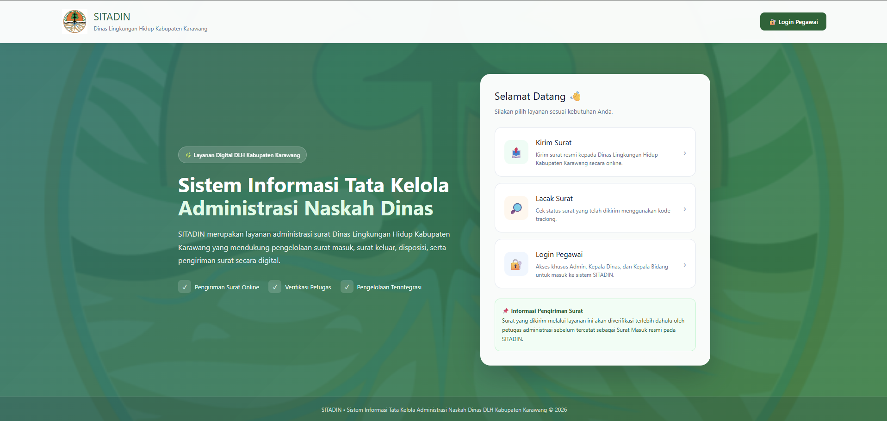
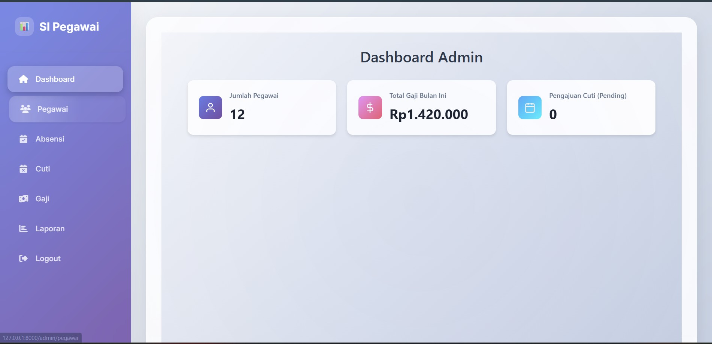
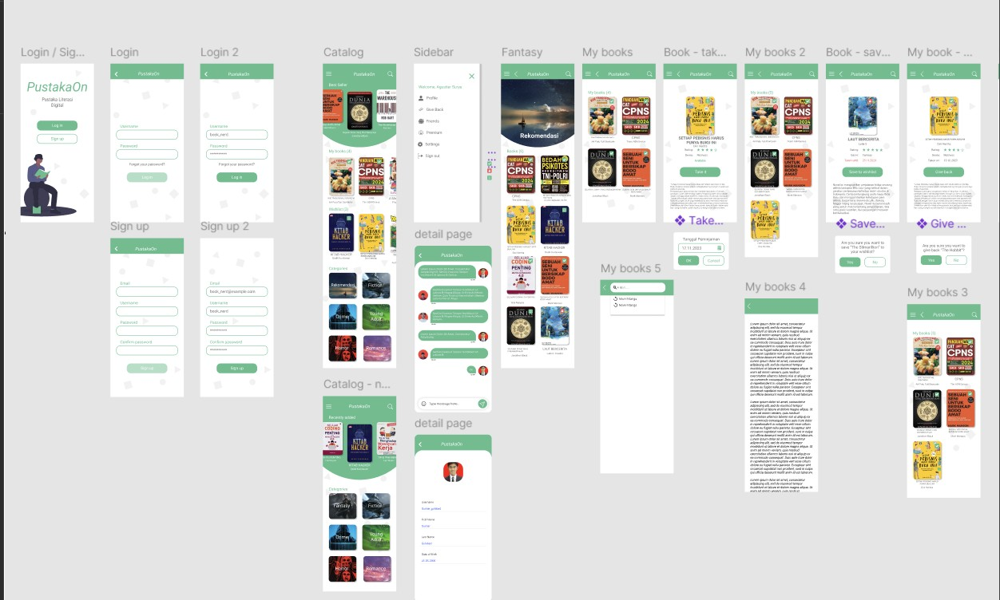

Saya adalah Lulusan D3 Sistem Informasi yang berfokus pada analisis alur kerja operasional, tata kelola data, dan perancangan solusi sistem. Memiliki kombinasi pengalaman administrasi operasional dengan pemahaman teknis web development (UML & prototipe web) untuk menjembatani kebutuhan bisnis dengan solusi teknologi yang efisien.
Menganalisis alur proses bisnis harian, mengidentifikasi kendala operasional, serta mendokumentasikan kebutuhan teknis sistem informasi.
Merancang pemodelan alur kerja sistem terstruktur menggunakan Use Case Diagram, Activity Diagram, Flowchart, dan ERD.
Membangun prototipe aplikasi berbasis web (PHP, Laravel, MySQL) untuk memvalidasi dan mensimulasikan alur kerja rancangan sistem.
Merancang alur digitalisasi tata kelola arsip, e-disposisi surat masuk/keluar, dan sistem pendataan administrasi internal.
Merancang skema relasi basis data yang optimal, terstruktur, dan efisien untuk mendukung pengolahan data sistem informasi.
Mengelola, merekapitulasi, dan memutakhirkan data operasional (Work Order, stok persediaan, & SDM) dengan tingkat akurasi tinggi.
Kumpulan proyek dan prototipe sistem informasi yang saya rancang dan kembangkan untuk menjawab kebutuhan tata kelola data operasional.

Digitalisasi alur surat masuk/keluar & disposisi pimpinan berbasis web.

Tata kelola data rekapitulasi, arsip SDM, dan administrasi internal.

Manajemen sirkulasi peminjaman, pengembalian, dan ketersediaan buku.
Tertarik untuk berkolaborasi atau mendiskusikan peluang kerja terkait analisis dan perancangan sistem? Silakan hubungi saya melalui kanal di bawah ini.